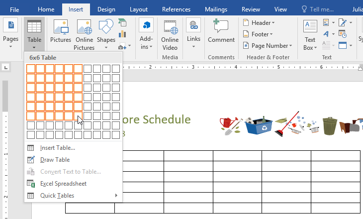
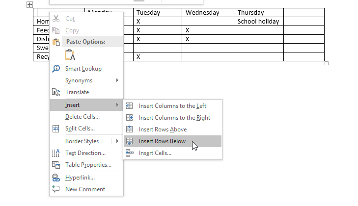
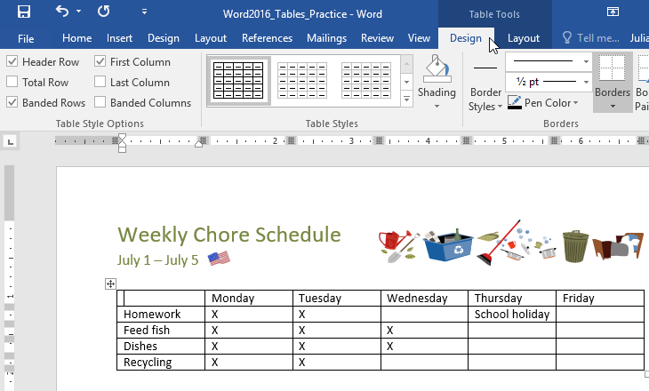
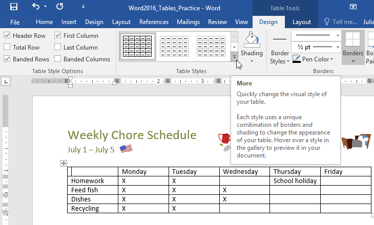
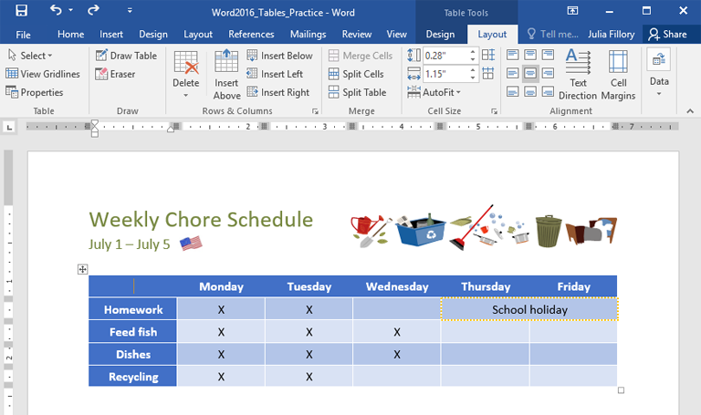
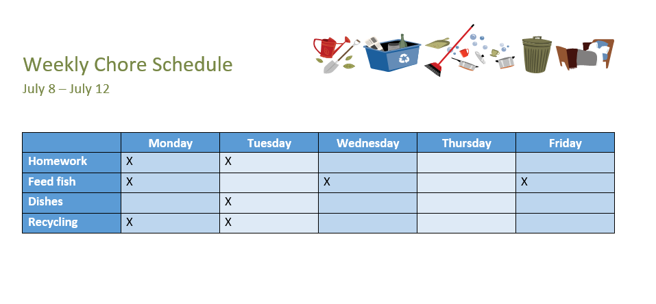

Lesson 23: tables
Lesson 23: Tables
/en/word/aligning-ordering-and-grouping-objects/content/
Introduction
A table is a grid of cells arranged in rows and columns. Tables can be used to organize any type of content, whether you're working with text or numerical data. In Word, you can quickly insert a blank table or convert existing text to a table. You can also customize your table using different styles and layouts.
Watch the video below to learn more about creating tables.

To insert a blank table:
- Place the insertion point where you want the table to appear.
- Navigate to the Insert tab, then click the Table command.
3. This will open a drop-down menu that contains a grid. Hover over the grid to select the number of columns and rows you want.

4. Click the grid to confirm your selection, and a table will appear. 5. To enter text, place the insertion point in any cell, then begin typing.To navigate between cells, use the Tab key or arrow keys on your keyboard. If the insertion point is in the last cell, pressing the Tab key will automatically create a new row.
To convert existing text to a table:
In the example below, each line of text contains part of a checklist, including chores and days of the week. The items are separated by tabs. Word can convert this information into a table, using the tabs to separate the data into columns.
- Select the text you want to convert to a table. If you're using our practice file, you can find this text on page 2 of the document.
2. Go to the Insert tab, then click the Table command.
3. Select Convert Text to Table from the drop-down menu.
4. A dialog box will appear. Choose one of the options under Separate text at. This is how Word knows what to put into each column.
5. Click OK. The text will appear in a table.
Modifying tables
You can easily change the appearance of your table once you've added one to your document. There are several options for customization, including adding rows or columns and changing the table style.
To add a row or column:
- Hover outside the table where you want to add a row or column. Click the plus sign that appears.
2. A new row or column will be added to the table.

You can also right-click the table, then hover over Insert to see various row and column options.

To delete a row or column:
- Place the insertion point in the row or column you want to delete.
- Right-click, then select Delete Cells from the menu.
3. A dialog box will appear. Choose Delete entire row or Delete entire column, then click OK.
4. The row or column will be deleted.
To apply a table style:
Table styles let you change the look and feel of your table instantly. They control several design elements, including color, borders, and fonts.
- Click anywhere in your table to select it, then click the Design tab on the far right of the Ribbon.

2. Locate the Table Styles group, then click the More drop-down arrow to see the full list of styles.
3. Select the table style you want.
4. The table style will appear.

To modify table style options:
Once you've chosen a table style, you can turn various options on or off to change its appearance. There are six options: Header Row, Total Row, Banded Rows, First Column, Last Column, and Banded Columns.
- Click anywhere in your table, then navigate to the Design tab.
- Locate the Table Style Options group, then check or uncheck the desired options.
3. The table style will be modified.
Depending on the Table Style you've chosen, certain Table Style Options may have a different effect. You might need to experiment to get the look you want.
To apply borders to a table:
- Select the cells you want to apply a border to.
2. Use the commands on the Design tab to choose the desired Line Style, Line Weight, and Pen Color.
3. Click the drop-down arrow below the Borders command.
4. Choose a border type from the menu.
5. The border will be applied to the selected cells.
Modifying a table using the Layout tab
In Word, the Layout tab appears whenever you select your table. You can use the options on this tab to make a variety of modifications.
Click the buttons in the interactive below to learn more about Word's table layout controls.
edit hotspots

Rows and Columns
Use these commands to quickly insert or delete rows and columns. This can be especially useful if you need to add something to the middle of your table.
Merge and Split Cells
Some tables require a layout that doesn't conform to the standard grid. In these cases, you may want to merge multiple cells (i.e., combine them into one) or split a cell in two.
Change Cell Size
You can manually enter a desired row height or column width for your cells. You can also use the AutoFit command, which will automatically adjust the column widths based on the text inside.
Distribute Rows/Columns
To keep your table looking neat and organized, you may want to distribute your rows or columns equally. This will make them all the same size. You can apply this feature to the entire table or just a small portion of it.
Align Cell Text
By changing the alignment of your cells, you can control exactly where the text is located. In the example below, the text has been aligned to the center.
Change Text Direction
You can easily change the direction of your text from horizontal to vertical. Making your text vertical can add style to your table; it also allows you to fit more columns in your table.
Challenge!
- Open our practice document.
- Scroll to page 3 and select all of the text below the dates July 8 - July 12.
- Use the Convert Text to Table to insert the text into a 6-column table. Make sure to Separate text at Tabs.
- Delete the Saturday column.
- Insert a column to the left of the Friday column and type Thursday in the top cell.
- Change the table style to any style that begins with Grid Table 5. Hint: Style names appear when you hover over them.
- In the Table Style Options menu, uncheck Banded Rows and check Banded Columns.
- Select the entire table. In the Borders drop-down menu, choose All Borders.
- With the table still selected, increase the table row height to 0.3" (0.8 cm).
- Select the first row and change the cell alignment to Align Center.
-
When you're finished, your table should look something like this:

/en/word/charts/content/